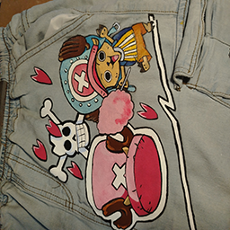
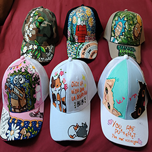
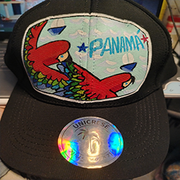
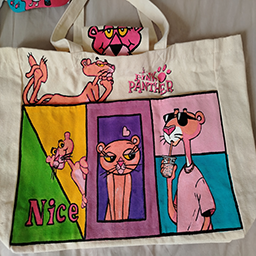
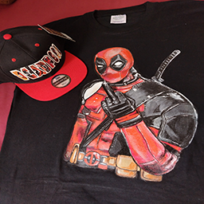
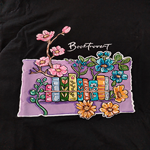

Wearables - Annie's Paint Lab
Custom Hats, Shirts, Pants, Bags, and Beautiful Handmade Designs
Wearable art allows me to turn everyday clothing and accessories into colorful pieces of personality. Instead of keeping creativity only on a canvas, I love bringing art to hats, shirts, pants, tote bags, and custom pieces that people can actually wear and enjoy. Each design feels fun, personal, and full of corazón.
I come from very humble beginnings, so many of my art designs began as personal expression, but also as a way to feel good about what I was wearing. What started as a simple doodle on my school uniform became a unique way to show my inner spirit, creativity, and joy.
What an amazing experience it is to see my friends and family smile because of something I created for them. My nephew is my biggest fan, and I love showering him with personalized gifts that are made with color, love, and a little Panamanian fun.
Fresh Denim

Fresh Denim is where my wearable art really started to show its personality. What began as a simple doodle on my pants turned into a fun way to express my creativity, humor, and inner spirit. I love using denim because it already feels casual and cool, but with hand-painted details, it becomes something original, colorful, and full of life.
Lids

Lids are one of my favorite ways to turn a small accessory into a bold piece of art. These hats are playful, colorful, and full of cat-inspired charm. Each design has its own little attitude, from sweet and cute to funny and full of personality. They are perfect for anyone who wants to wear something fun, creative, and different.
Panama Pride

Panama Pride is a special design because it celebrates where I come from. The bright colors, tropical feeling, and bold Panama lettering all remind me of home, culture, and alegría. This kind of wearable art lets me carry a little piece of Panama wherever I go, while sharing that joy and color with everyone who sees it.
Totes and More

I give everyday items accessory a fun and useful twist. A plain tote bag can become a walking piece of art with bright colors, cartoon-style designs, and playful details. I like creating pieces like this because they are not just pretty to look at; they can be carried, gifted, and used while still showing personality.
Gift Sets

Gift Sets are special because they are made with someone specific in mind. This piece shows how a shirt and hat can work together as a custom birthday surprise or personal gift. I enjoy creating designs like this because they make people smile, especially when the artwork connects to something they love, like a favorite character, color, or theme.
Clean T-Shirt Design

Clean T-Shirt Design shows the softer and more peaceful side of my wearable art. Not every design has to be loud to be meaningful. Sometimes flowers, soft colors, simple words, and careful details can make a shirt feel calm, pretty, and personal. This style is perfect for someone who wants something simple, beautiful, and made with love.